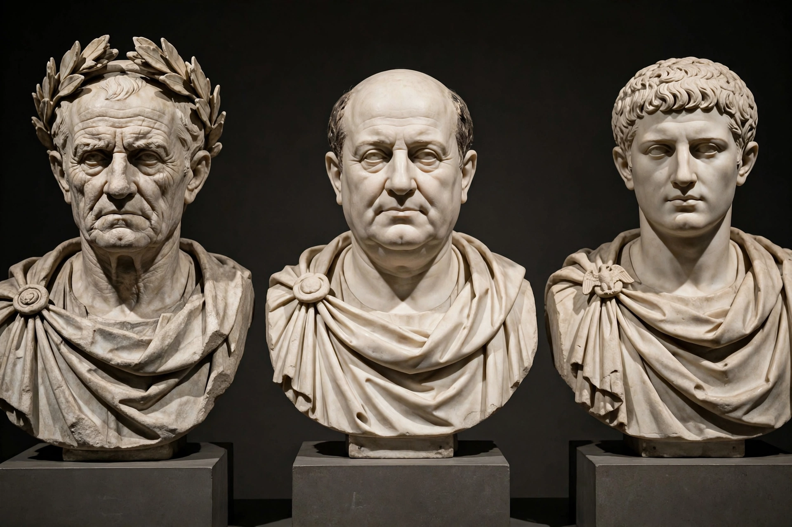

The First Triumvirate was an informal political alliance formed in 60 BC between the three most powerful men in the late Roman Republic: Julius Caesar, Pompey the Great, and Marcus Licinius Crassus. Unlike the official Second Triumvirate of 43 BC, it had no legal standing; it was a private arrangement — called by contemporaries a "three-headed monster" — through which the three pooled their wealth, clients, and armies to dominate the state and overcome senatorial obstruction.
Each partner brought what the others lacked. Pompey, Rome's most famous general, needed land for his veterans and ratification of his eastern settlement, both blocked by the Senate. Crassus, the richest man in Rome, sought relief for the tax-farming companies of Asia in which he had interests. Caesar, returning from Spain and seeking the consulship, brokered the partnership and reconciled Pompey and Crassus, who had been rivals. The pact was sealed by the marriage of Caesar's daughter Julia to Pompey. With their backing, Caesar was elected consul for 59 BC and forced through the allies' measures, notoriously ignoring his co-consul Bibulus.
Caesar received a five-year command in Gaul, where he built an army and a fortune. The alliance was renewed at the Conference of Luca in 56 BC: Pompey and Crassus took the consulship for 55 BC and then great provincial commands — Spain for Pompey, Syria for Crassus — while Caesar's Gallic command was extended.
The bonds dissolved quickly. Julia died in childbirth in 54 BC, and Crassus was killed by the Parthians at the Battle of Carrhae in 53 BC, leaving Caesar and Pompey as rivals. Pompey drifted toward the senatorial conservatives (the Optimates); the Senate, fearing Caesar's army and ambition, ordered him to disband before standing for office, and in January 49 BC Caesar crossed the Rubicon, beginning the civil war that ended at Pharsalus.
See also: Battle of Pharsalus · Roman Republic